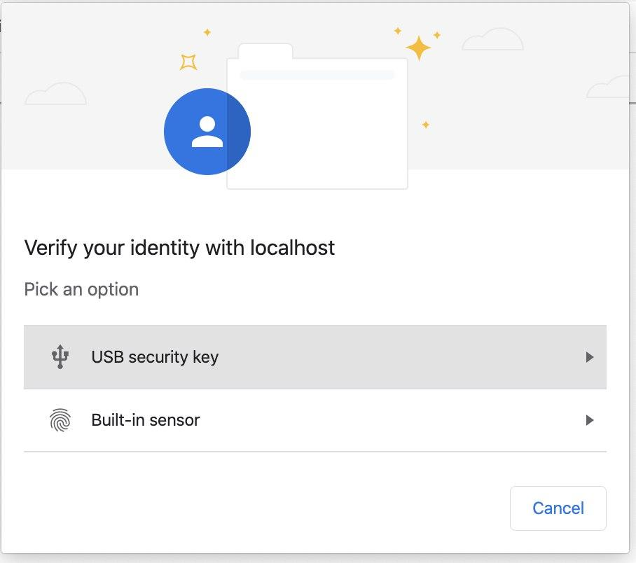
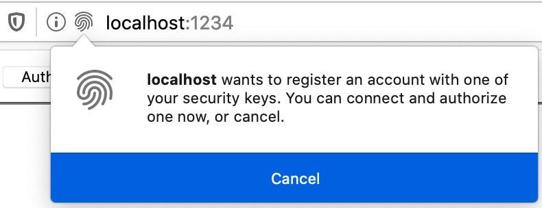
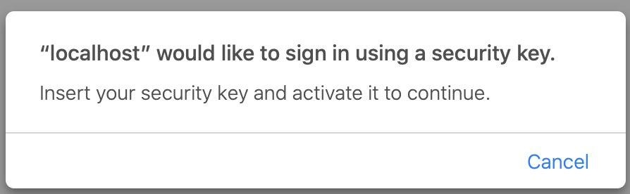

Email Token-Based Authentication

Two-factor authentication (2FA) strengthens access security by requiring two methods (also referred to as factors) to verify your identity. These factors can include something you know - like a username and (or) password, plus something you have - like a smartphone app to approve authentication requests.
FIDO (Fast IDentity Online) Alliance


A Method for Obtaining Digital Signatures and Public-Key Cryptosystems
MIT, 1977
const credential = await navigator.credentials.create({
publicKey: publicKeyCredentialCreationOptions
});
rp: {
name: "Some secure site",
id: 'domain.com' // same-origin restrictions
},
PublicKeyCredential {
id: 'ADSUllKQmbqdGtpu4sjseh4cg2TxSvrbcHDTBsv4NSSX9...',
rawId: ArrayBuffer(59),
response: AuthenticatorAttestationResponse {
clientDataJSON: ArrayBuffer(121),
attestationObject: ArrayBuffer(306),
},
type: 'public-key'
}
id – generated credential IDclientDataJSON – data passed to authenticator to associate credential with server and browserattestationObject – Object with Public Key and other metadata
{
fmt: 'none',
attStmt: {},
authData: <Buffer 49 96 0d ...>
}
-----BEGIN PUBLIC KEY-----
MFkwEwYHKoZIzj0CAQYIKoZIzj0DAQcDQgAES8TDnoo3SH7tkQipIFDVB2Nfx5mp
j0L4OaOdqLbfEeYEsU5DE1hW0ROHCId5MTlfKbJY4wUYWseGSjwShgYsMQ==
-----END PUBLIC KEY-----

const assertion = await navigator.credentials.get({
publicKey: publicKeyCredentialRequestOptions
});
PublicKeyCredential {
id: 'ADSUllKQmbqdGtpu4sjseh4cg2TxSvrbcHDTBsv4NSSX9...',
rawId: ArrayBuffer(59),
response: AuthenticatorAssertionResponse {
authenticatorData: ArrayBuffer(191),
clientDataJSON: ArrayBuffer(118),
signature: ArrayBuffer(70),
},
type: 'public-key'
}
| Chrome / Opera | Firefox | Safari |
|  |  |  |
| Security | Origin / Multy domain issue |
| Easy to implement | Iframe issue |
| Easy to use | Cross-platform vs Platform |
| Reliability | Browser UI |
|
Denis Zavgorodny
|